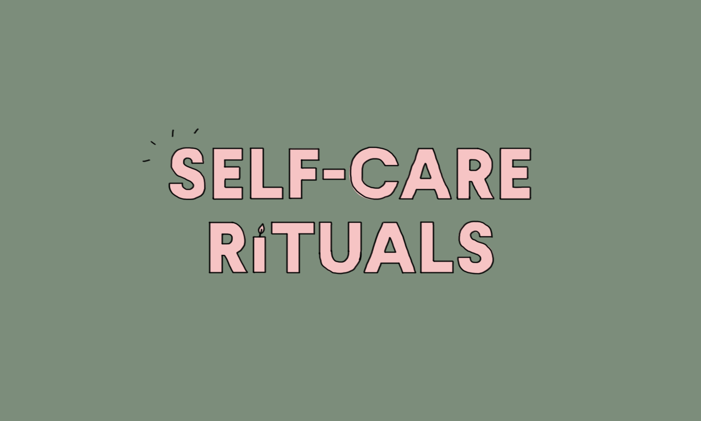
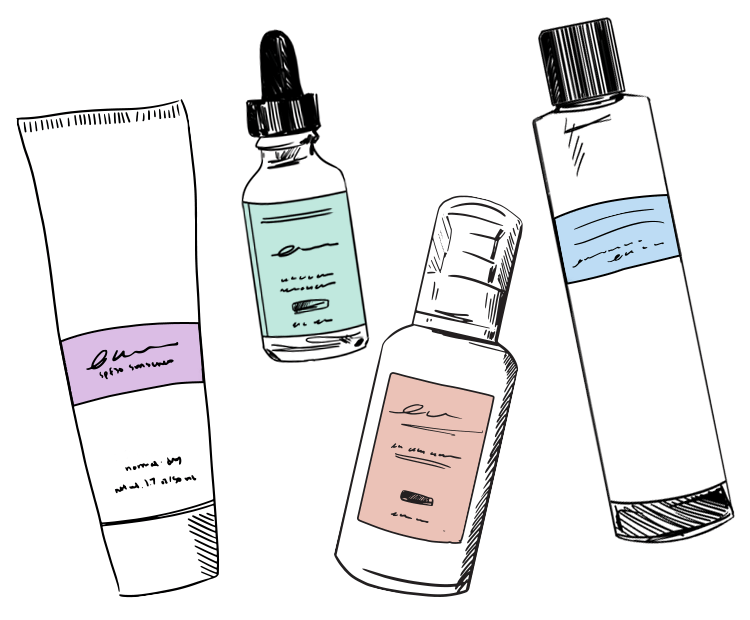
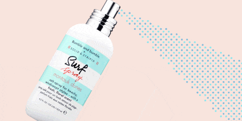
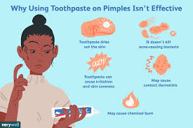

Self care is the mental and physical preperation or rest of your body and mind. It's a time or day that you deicate to yourself or things you do on a daily bases that make you feel like refreshed and destress from reality. is a generalized term that’s recently grown in popularity used to describe things you do for yourself to make yourself feel good. These can be small self-care tips like picking up your favorite latte on your way to work, or something on a grander scale like booking an international vacation. Self-care activities are critical to our mental health and emotional state of well-being. When you prioritize yourself, you not only ensure you are the best “you” possible, but you reinvigorate yourself. You have more energy and joy to give in other areas of your life. Here are some self-care ideas if you’re looking for ways to bolster your well-being.
If your skin is oily, you'll probably do well with a foaming or gel cleanser for daily skin care. Cleanse once a day, or twice if your skin gets very oily or dirty throughout the day. "If a teen girl wears makeup, it's best to remove eye makeup first, then cleanse with your fingertips and a gel or foaming cleanser," Wu says. If you play sports or work hard in PE class, wash your face (if you can) before you exercise. At the very least, she says, carry facial tissues to blot your skin. For teens who have dry rather than oily skin, try a milky cleanser and moisturizer.
Even if your best friend can sleep with her makeupon and look great, it's not a great idea. "If you're simply too exhausted to tie your hair back, take off makeup, and wash your face, at least use a pre-moistened cleansing wipe to take off makeup, dirt, and oil," Wu says. If you make a regular habit of sleeping in makeup, you can have an acne breakout or develop a bumpy rash called perioral or periocular dermatitis. Control oil. You want to keep down the shine without being harsh on your skin. According to Wu, there's a basic three-step process to oil control: (1) choose a salicylic acid cleanser, (2) use an oil-free primer to control shine, and (3) blot oil during the day using specialized cloths or tissues.
You need to exfoliate only once or twice a week, using a relatively gentle product. Don't scrub (it won't help with acne or blackheads) and don't over-exfoliate.

If you have breakouts, try this approach: Wash your skin, use a toner, and then apply a medicated acne gel.
. Do you want to share your friend's germs?" Wu asks. "It's an especially bad idea to share eye and lip products. So, as tempting as it is to try your friend's perfect new eye liner, get your own instead.

If you notice that your acne breakouts cluster around your hairline or places where your hair often brushes your skin, consider that your hair product might be to blame. Make a switch to spray products, which, Wu says, "are less likely to cause breakouts."
One way to help your skin stay healthy is to protect it from dirt and too many germs. Wash your hands before you touch your face or touch up your makeup and regularly clean other surfaces that touch your skin, such as your phone.

You might hear about many odd remedies to control acne, like putting toothpaste on your skin. In fact, this could just make skin worse if you are allergic to the ingredients. There's a ton of great skin care products on the market that can help you look your best.